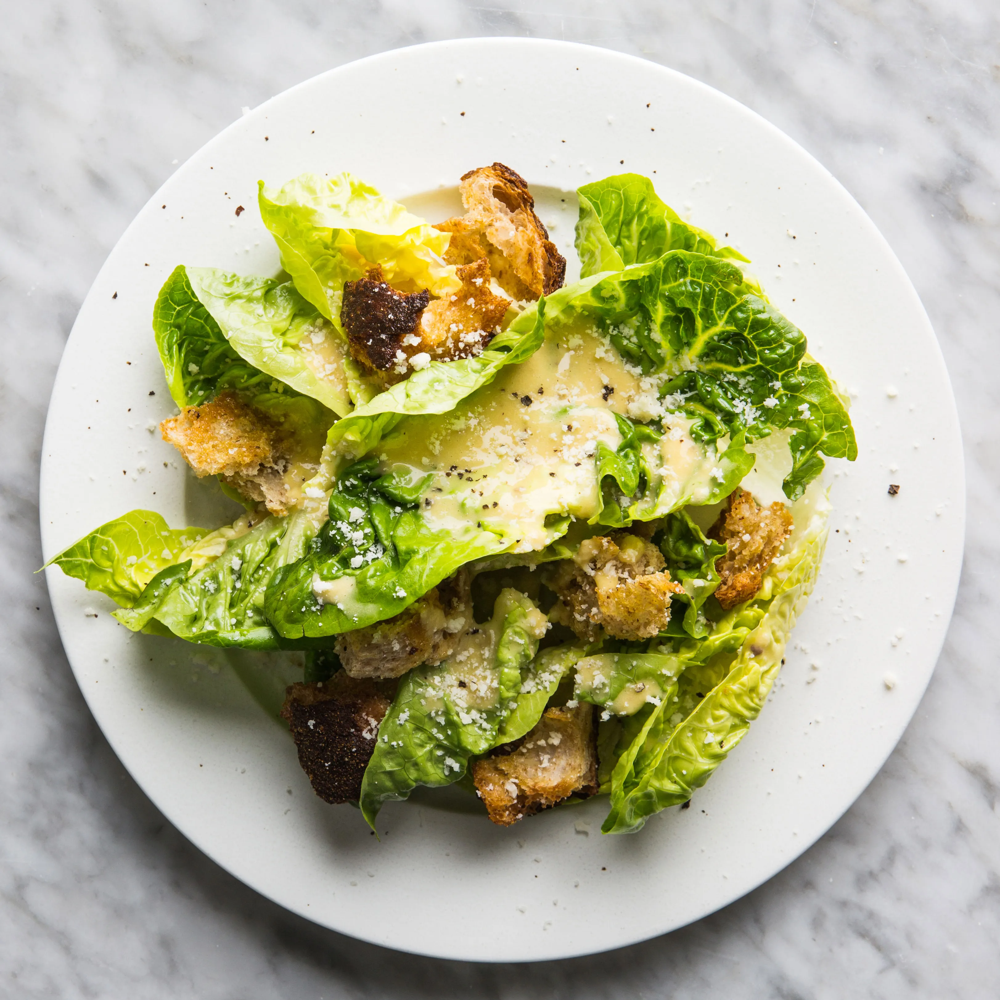

Caesar Salad Recipe!

Description:
Alright I'm sure all of you were waiting for a healthy recipe so here goes.
This'll basically be a caesar salad home made so have fun alright
Ingredients Needed:
- Romaine Lettuce
- Cheese
- (Homemade) Croutons
- Caesar Dressing
Steps to make:
- Preheat the oven to 350°F
- Make the courtons by placing bread cubes on baking sheet, tossing with olive oil and salt, and baking for 10 minutes until toasted
- Assemble the lettuce on a platter, and drizzle the dressing and croutons
- Eat up your healthy little dish and most of all, ENJOY!